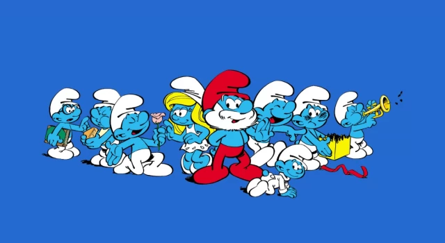

Hangi Çizgi Film Karakteri Sizi Daha Çok Seviyor
Sünger Bob

Şirinler
Bugs Bunny
Temel Reis
Tom ve Jerry
Bu çizgi film karakterleri arasından hangisi sizi daha çok seviyor öğrenmek istermisiniz ? Öyleyse zarı oynatın ve sonucu görün !
Başla !